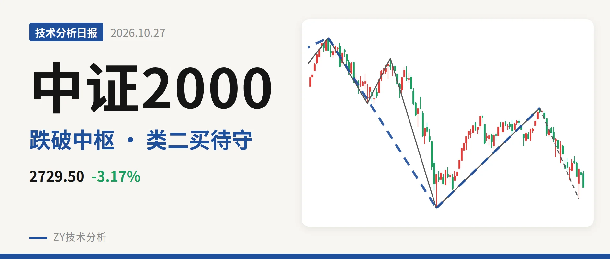
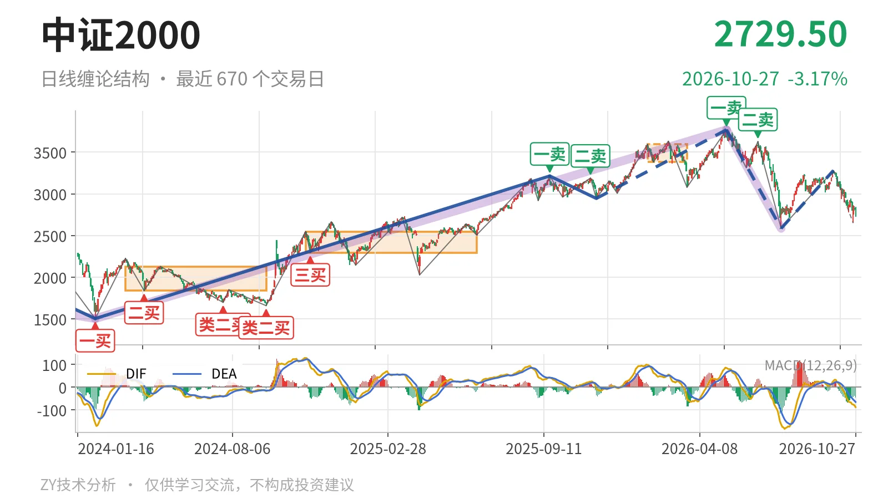
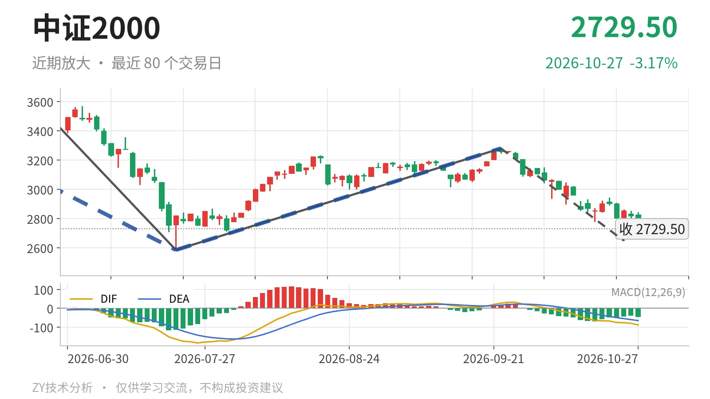

中证2000｜回抽2853未成笔，类二买看2585

最近日线中枢 3381.36—3593.19点，收盘位于中枢之下
一句话：仍在9月22日以来下跌笔内，2585点上方暂未破坏
📉 走势结构：日线还处在5月14日以来的下跌段里
更大级别上，2024年2月6日至2026年5月14日的上涨段在3768.08点见高后，5月14日以来的下跌段跌约31.4%至2585.35点。7月21日至9月22日只是走出一笔反弹，最高3280.29点，没有构成日线线段。当前9月22日以来的日线下跌笔还在延续，10月23日暂见2649.26点，10月26日至27日最高只反抽至2853.30点，仍未能成笔。因此眼下结构仍按5月14日以来的下跌段处理，反弹没有改变线段方向。

🧱 中枢与位置：最近笔中枢3381—3593点，已跌破下沿
最近一个日线笔中枢是1月26日至3月23日的3381.36—3593.19点，中轴3487.28点，该中枢还没有被后续线段确认完成。最新收盘2729.50点，低于下沿3381.36点约19.3%，已经跌回中枢下方。更早的2024年11月12日至2025年6月23日中枢在2293.12—2547.90点，当前仍在其上方。两个中枢比较，最近中枢位置更高，但价格没有回到最近中枢内，反抽高点2853.30点距下沿3381.36点还差约528点，中枢上移后的回踩没有回到中枢里。
🎯 买卖点：5月14日一卖后二卖更低，7月21日类二买暂守
日线笔级别上，5月14日一卖3768.08点、6月23日二卖3626.48点，高点一个比一个低，顶部结构明确。线段级别上，7月21日类二买2585.35点仍在，最新价2729.50点较该买点高约5.6%，所以这个类二买暂时未被破坏。2025年11月21日的线段级别二三买2944.56点，已经被5月14日以来的下跌段跌破，当前只对应更小级别，不再构成当前线段级结构点。

⚖️ 背驰：9月22日以来的下跌笔未创新低、绿柱缩减
最直接的比较是两段下跌笔：6月23日至7月21日跌28.7%，绿柱面积810，DIF低点-164.2；9月22日以来的下跌笔暂跌19.2%，绿柱面积618，DIF低点-76.5。当前笔低点暂为2649.26点，没有跌破2585.35点，绿柱面积更小、DIF低点更高，属于未创新低、力度未扩大。但这笔还没有结束，背驰只能按仍在延续的走势继续观察。最新DIF -88.3仍在零轴之下，DEA -65.5，柱体 -45.6，日线动能没有转好。
🔎 关键位置观察：2585点与3381点的结构含义
上方，若日线反抽不能回到3381点上方，最近日线笔中枢3381.36—3593.19点就构成压力，结构上偏弱；更近的观察位看2853点附近，10月26日以来的反抽已在该处遇阻。下方，若回落跌破2585点，7月21日线段级别类二买被破坏，5月14日以来的下跌段会继续延伸；若重新站上3381点，下跌更可能只是对中枢的扩展。当前价格在2585点上方、3381点下方，结构判断为偏弱震荡。
⚠️ 本文为基于公开行情数据的缠论技术结构记录，由程序自动计算并生成，仅供学习交流，不构成任何投资建议。市场有风险，投资需谨慎。